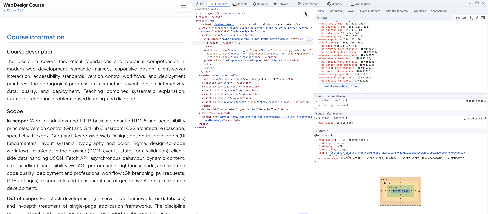

Lecture 2 - CSS Basics and the Box Model
Lecture 2 - CSS Basics and the Box Model. Duration: . This lecture introduces CSS as the presentation layer for semantic HTML, covers selector types, typography and color, and the CSS box model. It continues the foundations started in Lecture 1 and prepares the ground for responsive layouts and RWD patterns in Lecture 3. Connected to Lab 3 and Lab 4.
Learning outcomes
By the end of this lecture you will be able to:
- Explain the role of CSS as the presentation layer on top of semantic HTML and the DOM tree
- Distinguish between inline, embedded, and external style sheets and choose appropriate use cases
- Use basic, contextual, class, ID, pseudo-class, pseudo-element, and attribute selectors to target elements
- Control typography, spacing, colors, and backgrounds using common CSS properties and relative units
- Explain and apply the CSS box model (content, padding, border, margin, box-sizing) in layout decisions
- Apply basic styling to tables, navigation bars, and forms while keeping structure in HTML and presentation in CSS
Topics
- Review: document structure and DOM tree from Lecture 1
- CSS syntax: selectors, properties, values, and declaration blocks
- Sources of style: inline styles, embedded style sheets, external style sheets, and
@import - Cascading and specificity: author vs user styles, origin order, and selector weight
- Selector types: element, descendant, child, sibling, ID, class, pseudo-classes, pseudo-elements, attribute selectors
- Typography and text: font families, font stacks, size, weight, style, line-height, text alignment, decoration, transform, spacing
- Colors, opacity, and background images (including repeat, position, attachment, and shorthand)
- Measurements: absolute vs relative units,
emandrem - The CSS box model: content box vs border box, width/height, padding, border, margin, box-shadow, and collapsing margins
- Styling lists, tables, navigation bars, and forms for better usability without breaking semantics
- The
displayproperty and how it affects layout and interaction
Resource materials
- Jennifer Niederst Robbins, Learning Web Design: A Beginner's Guide to HTML, CSS, JavaScript, and Web Images, 6th ed., O'Reilly Media, 2025 – especially chapters on CSS basics, text, color, backgrounds, and the box model.
- MDN Web Docs - CSS – reference for selectors, properties, values, and layout behaviour.
- W3C CSS Specifications – formal definitions of CSS features and modules.
All resources can be accessed via the course classroom. See also Resources and the lab descriptions for concrete CSS practice tasks.
CSS as the presentation layer
In Lecture 1 we focused on HTML as structure and semantics. CSS adds presentation rules on top of that structure: how content is laid out, colored, and styled on screens, print, or assistive technologies. The same semantic HTML document can be shown very differently by swapping its style sheets, which is why separation of concerns is so powerful.
- HTML: defines the elements and their meaning (headings, lists, forms, navigation, etc.).
- CSS: defines how those elements are presented (layout, typography, colors, spacing, animations).
- Benefits: easier maintenance, consistent design across pages, better accessibility, and more control over different media (screen, print, small devices, screen readers).
CSS rules and syntax
A CSS rule selects one or more elements in the document tree and declares how they should be presented.
- Selector
- Identifies which elements in the DOM the rule applies to (e.g.
p,.special,#main-nav,ul li a). - Declaration block
- Curly braces containing one or more property–value pairs separated by semicolons.
- Property
- The aspect of presentation being changed (e.g.
color,font-size,margin-top). - Value
- The specific setting for that property (e.g.
green,1.5rem,2px solid #333).
h1 {
color: green;
font-size: 2rem;
}
p, li {
font-family: system-ui, -apple-system, BlinkMacSystemFont, "Segoe UI", sans-serif;
}You can group multiple selectors with a comma to share the same declaration block. The CSS specifications define the standard properties and values available across browsers.
Sources of style definitions
- Inline styles –
styleattribute on an element. Should be avoided in real projects because they mix presentation with structure and are hard to maintain. - Embedded style sheets –
<style>element inside the<head>of a single HTML document. Affects only that document. - External style sheets – separate
.cssfiles linked with<link rel="stylesheet" href="…">. The preferred method because multiple pages can share the same styles. @import– allows one style sheet to include another at the top, before any rules. Useful for modular CSS, but<link>is usually simpler and performs better.
In this course we will primarily use external style sheets, sometimes combined into small modular files (e.g. base, layout, components) depending on the size of the project.
The cascade and specificity
When several rules match the same element, the browser uses the cascade and specificity to decide which declarations win.
- Sources hierarchy (from least to most specific): browser defaults, user style sheets, linked/ imported author styles, embedded styles, inline styles, rules marked
!important(reader or author). - Specificity of selectors: ID selectors are stronger than class selectors, which are stronger than contextual selectors and simple element selectors.
For example, if both strong { color: red; } and h1 strong { color: blue; } apply, emphasized text inside <h1> will be blue because the second selector is more specific. We will revisit specificity later when we introduce more complex layout systems.
Selector types
- Element selectors – target all elements of a given type:
p,h1,ul. - Contextual (descendant) selectors – target elements nested inside others:
li em,ol a em. - Child selectors – target direct children:
p > em. - Sibling selectors –
h1 + p(adjacent sibling) andh1 ~ h2(general sibling). - ID selectors –
#catalog1234orli#catalog1234; should be unique in a document. - Class selectors –
.specialorp.special; reusable across many elements. - Pseudo-classes – element states such as
:link,:visited,:focus,:hover,:active,:checked,:disabled. - Pseudo-elements – parts of elements such as
::first-line,::first-letter,::before,::after. - Attribute selectors – target based on attribute presence or value, e.g.
a[target],input[type="email"],a[href*="example"].
Selectors let you describe where in the document tree a rule should apply without adding extra markup just for styling.
Typography, measurements, and text
Font families and font stacks
The font-family property defines a font stack: a list of preferred fonts ending with a generic family (serif, sans-serif, monospace, cursive, fantasy). The browser chooses the first available font.
body {
font-family: system-ui, -apple-system, BlinkMacSystemFont, "Segoe UI", sans-serif;
}Font size, weight, style, and variant
font-size– absolute keywords or relative units; we will preferremand percentages for flexibility.font-weight–normal,bold, or numeric values like400,700.font-style–normal,italic,oblique.font-variant– e.g.small-caps.font– shorthand property combining these values.
Absolute and relative measurements
- Absolute units – independent of environment (good for print), e.g.
cm,mm,in,pt. - Relative units – depend on context (preferred for screens), e.g.
em,rem,%,vw,vh.
Text properties
Common text-related properties:
line-height,text-indent,text-align,text-decoration,text-transformletter-spacing,word-spacing,text-shadow,white-space,vertical-alignvisibilityanddirection(ltr/rtlfor text direction)
Colors, backgrounds, and shadows
Color and background properties control the visual theme of your UI.
color– text and border color.background-color– background color of an element; often used withopacityor alpha values in color functions.background-image,background-repeat,background-position,background-attachment, and thebackgroundshorthand.text-shadowandbox-shadow– for visual emphasis and depth.
Good practice: keep background images lightweight, ensure sufficient color contrast for accessibility, and always define a solid fallback color that matches the main tone of the background image.
The CSS box model
Every element is represented as a rectangular box made of content, optional padding, border, and margin. Understanding the box model is essential for layout, spacing, and responsive design.
- Content box – area where text, images, or other content live.
- Padding – space between the content and the border.
- Border – line surrounding the padding and content.
- Margin – space outside the border, separating the element from its neighbors.
Key properties: box-sizing (content-box vs border-box), width, height, padding, border (style, width, color, radius, image), margin, overflow, and how vertical margins can collapse.
Styling lists, tables, navigation bars, and forms
CSS can transform default HTML rendering into more usable interfaces without changing the underlying semantics.
- Lists – use
list-styleproperties anddisplaychanges to create horizontal navigation bars from<ul>/<li>structures. - Tables – control
caption-side,table-layout,border-collapse, andborder-spacingto improve readability of tabular data. - Navigation bars – build accessible nav bars with semantic lists and anchors styled with background colors, hover states, and fixed positioning when appropriate.
- Forms – improve layout and user experience by styling labels, text inputs, textareas, buttons, and fieldsets while leaving UI controls that are heavily platform-specific largely to the browser.
Good practice: align labels and inputs, group related controls into fieldsets, and use CSS rather than tables for form layout.
The display property
The display property controls how an element participates in layout—for example, as an inline element, a block-level box, a list item, or a table cell.
- Common values:
inline,block,inline-block,list-item,none. - Table-related values:
table,table-row,table-cell, etc., which can be useful for certain layout patterns. display: noneremoves the element from layout entirely; contrast withvisibility: hidden, which hides the element but keeps its space.
Inspecting CSS and the box model
When you inspect an element in your browser’s developer tools, you can see both the CSS rules that apply to it and a visual representation of the box model (content, padding, border, and margin). This is one of your main tools for debugging CSS: it tells you which selector wins, where spacing comes from, and how the browser actually computed the layout.

- Rules (Styles) panel: lists all CSS declarations that apply to the selected element, grouped by selector and source file. You can:
- see exactly which selector sets a property like
marginorpadding, - see crossed‑out rules that lost due to specificity or later declarations,
- toggle declarations on and off using the checkbox to test “what if this rule didn’t exist?”.
- see exactly which selector sets a property like
- Computed / Layout panel: shows the final computed values and a box model diagram. The colored regions (content, then padding, then border, then margin) let you confirm whether extra space comes from margin outside the border or padding inside it. Hovering the diagram highlights those areas in the page.
- Debugging recipes:
- “Why is there extra space here?” Inspect the element, look at the box model, check which rule sets the margin or padding, then disable that rule temporarily and adjust the CSS file.
- “Why isn’t my selector working?” Inspect the element and, in the Rules panel, look for your selector: if it is crossed out, another selector is more specific or appears later; if it is missing, the file may not be loaded or the selector does not match.
- “Why is the font or color wrong?” Inspect the element, look at the
color,font-family, and related properties in the Computed tab, and follow the link to the rule that sets them.
Connection to labs. In the CSS labs (Lab 3 and Lab 4), use the inspector constantly: change a property in devtools, see the effect immediately, and then copy the final values back into your CSS files to make the change permanent.
Next
At the end of this lecture we will have a short quiz based on the previous topics (HTML and the CSS fundamentals from Lectures 1–2), followed by a brief recap that connects to the responsive design content in Lecture 3.
Next: Lecture 3 continues directly from this lecture with layout techniques (float, positioning, Flexbox, Grid) and responsive patterns. Depending on class feedback and pacing, we may shift some subtopics between Lecture 2 and Lecture 3 while keeping the same overall learning outcomes and assessment structure.